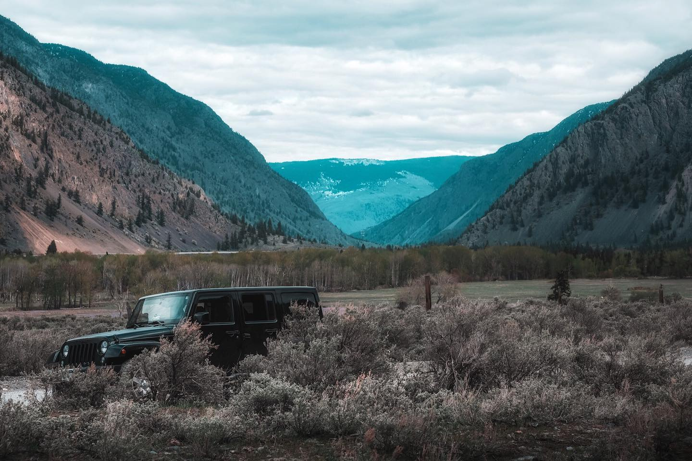

January 16, 2025
Meet Ryan Oliverius, an environmental
advocate who uses his platform to showcase the beauty
of nature and inspire change. You can follow him on:
Through engaging videos and posts of sceneries,
Ryan highlights the importance of preserving natural
landscapes and promoting sustainable practices.

[Photo found on Instagram @RyanOliverius]
Environmental degradation is a global crisis, with
industrialization and deforestation threatening
ecosystems worldwide. Indigenous lands, which make
up 25% of the world’s area, are among the most
vulnerable because of the lack in support of Indigenous peoples
as they are belittled, but despite being looked down upon, has
the highest potential in conservation.
In Canada, FNMI communities often face the brunt of
environmental exploitation. These oil pipelines constructed
by corporations are being built upon Indigenous lands, crossing
sacred lands to exploit their lack of voice and take away from
their cultures and history. These issues worsen existing
socioeconomic challenges. To solve this issue,
the protection of these lands will not only safeguard the
cultural heritage of Indigenous, but also contributes to global
biodiversity.
- What can corporations do to balance profit with environmental stewardship?
- How can policy makers integrate Indigenous knowledge into national conservation strategies?
- What role can individuals play in advocating for sustainable practices?
The Truth and Reconciliation Commission of Canada's
Call to Action #92 emphasizes the importance of
corporate responsibility in consulting Indigenous
communities and adopting sustainable practices.
Here’s what we can do:
- Adopt UNDRIP: Ensure Indigenous rights are respected through meaningful collaboration.
- Provide Education: Educate corporate staff on Indigenous history and environmental issues.
- Support Initiatives: Create opportunities for Indigenous communities through jobs and education.
Did You Know?
Globally, Indigenous lands store 80% of the world's biodiversity. Protecting these lands is crucial for combating climate change and preserving ecosystems.
Learn More
Understanding and respecting Indigenous
cultures is essential for building stronger
relationships with Indigenous communities. By
immersing ourselves in their traditions, stories, and
practices; it will help better understand
the crucial role they play in environmental
restoration.
Watch documentary that
explores connections between
Indigenous communities and their lands,
highlighting the importance of cultural
preservation in the fight against climate
change.
"AGAINST THE CURRENT" is a short documentary that explores the culture of indigenous people. Produced by BYkids, the film provides an intimate look into the traditions, challenges, and resilience of indigenous communities. Through personal narratives and vivid imagery, it highlights the importance of preserving cultural heritage in the face of modernday pressures.
In this interview, Tanya Kappo discusses her father's activism's influence on her own journey and shares insights from her involvement in the Idle No More movement. She reflects on the movement's impact and the lessons learned from it.